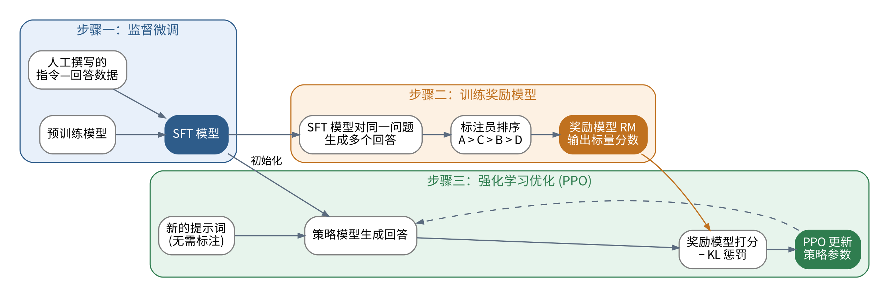
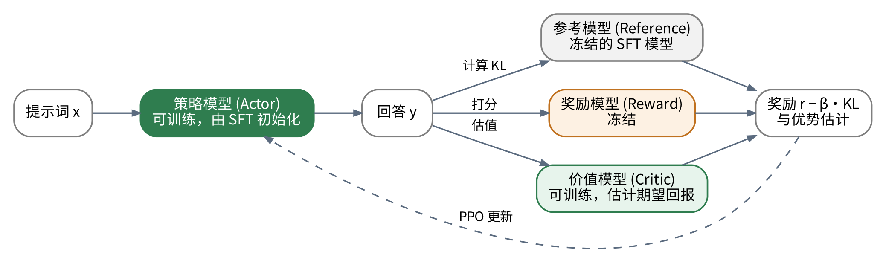

3.7 大语言模型对齐技术
3.7.1 为什么需要对齐
经过指令微调，模型已经初步具备了服从人类指令、完成各类任务的能力。但仅有 SFT 还不够：
- 高质量回答的获取成本高：SFT 需要大量指令及其对应的标准回答，撰写高质量的回答要耗费大量人力和时间。而且对于开放式问题，人很难写出”最好”的回答，却很容易判断两个回答中”哪个更好”；
- 模仿不等于理解偏好：SFT 让模型模仿示范回答，但不能告诉模型”什么样的回答是不好的”。面对自然语言的多样性和指令中的细微变化，模型的表现仍然不够稳健；
- 存在幻觉和有害输出：大模型参数量庞大、训练语料复杂，行为难以理解和预测，容易产生幻觉（一本正经地编造事实）或有害内容。当模型日益强大、应用越来越广泛、频繁地与用户互动时，这些问题可能造成严重后果。
因此，需要让模型的输出与人类的价值观和意图对齐（Alignment）。一个被广泛接受的标准是 3H 原则：
- 有帮助（Helpful）：理解用户的真实意图，提供有用的回答；
- 诚实（Honest）：提供真实的信息，不编造事实，在不确定时坦承不知道；
- 无害（Harmless）：不输出歧视性、危险或违法的内容，不对用户和社会造成伤害。
对齐方法的共同特点是：不再依赖人工撰写的标准回答，而是让模型生成多个回答，根据人类（或 AI）对这些回答的偏好进行学习。 这特别适合答案开放、难以给出唯一标准答案的生成式任务，是构建大语言模型必不可少的关键步骤。
3.7.2 基于人类反馈的强化学习（RLHF）
基于人类反馈的强化学习（Reinforcement Learning from Human Feedback，RLHF）是最早被大规模应用的对齐方法。OpenAI 在 2022 年发表的 InstructGPT 工作中系统地描述了这一流程，ChatGPT 也采用了类似的方法。如图 3-16 所示，RLHF 分为三个步骤：
- 监督微调：用人工撰写的示范数据对预训练模型做 SFT，得到初始策略（见 3.5 节）；
- 训练奖励模型：让 SFT 模型对同一问题生成多个回答，由标注员按质量排序，用这些偏好数据训练一个能给回答打分的奖励模型；
- 强化学习优化：以奖励模型的打分作为奖励信号，用近端策略优化（PPO）算法继续训练语言模型，让它生成得分更高的回答。

图3-16 RLHF 的三个步骤
InstructGPT 的实验表明，经过 RLHF 的 13 亿参数模型，在人类评估中的表现甚至优于未经对齐的 1750 亿参数 GPT-3。这说明对齐带来的提升并不只是”锦上添花”。
3.7.3 奖励模型
1．作用
奖励模型（Reward Model，RM）的思想来自强化学习中的奖励函数：对当前状态给出一个分数，说明该状态的价值有多大。在大语言模型中，奖励模型的输入是一个问题和一个回答，输出是一个标量分数：回答越符合人类偏好（有用、真实、无害），分数越高。奖励模型相当于一个”自动化的人类评委”，可以源源不断地为后续的强化学习提供奖励信号。
2．结构
奖励模型同样采用 Transformer 结构，通常由 SFT 模型初始化：去掉最后用于预测词表概率的输出层（以及其后的 softmax），换成一个输出单个数值的线性层。这样，无论输入什么文本，奖励模型都会在序列的最后一个 Token 处输出一个标量奖励值 \(r_{\phi}(x,y)\)，其中 \(\phi\) 是奖励模型的参数。
3．训练数据与损失函数
为什么让标注员排序而不是直接打分？因为不同的人对”7 分”和”8 分”的理解差异很大，而对”A 比 B 好”的判断则基本一致。排序的方式减少了人为误差。
训练数据由成对的比较组成：对同一个问题 \(x\)，有一个更受偏好的回答 \(y_{w}\) 和一个较差的回答 \(y_{l}\)。若标注员对 \(K\) 个回答进行了排序，就可以得到 \(\binom{K}{2}\) 个这样的比较对（InstructGPT 中 \(K\) 取 4～9）。奖励模型采用成对排序损失（Pairwise Ranking Loss）训练：
\(\mathcal{L}_{RM}(\phi) = - \mathbb{E}_{\left( x,\, y_{w},\, y_{l} \right) \sim \mathcal{D}}\left\lbrack \log\sigma\left( r_{\phi}\left( x,y_{w} \right) - r_{\phi}\left( x,y_{l} \right) \right) \right\rbrack\quad\) (3-32)
其中 \(\sigma(z) = 1/\left( 1 + e^{- z} \right)\) 是 sigmoid 函数，它把两个回答的分数差映射为 0 到 1 之间的概率，表示”\(y_{w}\) 优于 \(y_{l}\)“的可能性。分数差越大，该概率越接近 1，损失越接近 0；如果奖励模型给较差回答打了更高的分，分数差为负，损失就会很大。这一形式来自统计学中描述成对比较的 Bradley-Terry 模型。
4．数据集
构建奖励模型的训练数据，是满足 3H 原则的关键之一。数据主要围绕有用性和无害性两方面收集：有用性主要依赖标注者的判断，他们的偏好排序构成了主要的衡量标准；无害性则需要同时收集正面的安全回答和用于负面增强的有害示例。收集过程中，可以先让大模型生成候选回答，再由标注者判别和选择，以提高效率。目前已有一些开源的偏好数据集可供使用，例如 OpenAI 针对摘要任务发布的 Summarize from Feedback 数据集、针对 WebGPT 任务构建的人类比较数据集、Anthropic 发布的有用性与无害性数据集 HH-RLHF，以及斯坦福大学发布的 SHP（Stanford Human Preferences）数据集等。
【思考】有用性与无害性的矛盾。 有用性和无害性往往是相互冲突的。过度追求无害，模型会变得过于谨慎：对正常的医学、安全问题也一概回答”我无法提供帮助”，安全却无用；过度强调有用，模型又可能”有求必应”，输出有害或危险的内容。好的对齐需要在二者之间找到平衡，这也是对齐研究中至今仍在探索的核心难题之一。
3.7.4 近端策略优化（PPO）
1．把文本生成看作强化学习
得到奖励模型之后，就可以用强化学习继续优化语言模型。在强化学习的框架下，各基本要素的含义如下：
- 策略（Policy）：就是语言模型本身，记为 \(\pi_{\theta}\)。它接收提示词作为输入，输出一系列文本（或文本的概率分布）；
- 状态（State）：提示词加上已经生成的部分 \(s_{t} = \left( x,y_{< t} \right)\)。所有可能的状态构成观察空间，即词表中所有 Token 在所有输入位置上的排列组合；
- 动作（Action）：在每一步从词表中选出下一个 Token \(a_{t} = y_{t}\)。动作空间就是词表，整个回答则对应词表中 Token 在所有输出位置上的排列组合；
- 奖励（Reward）：生成完整回答后，由奖励模型给出分数，并配合一些策略层面的约束（如下文的 KL 惩罚）计算最终奖励。
训练 RL 模型时，初始策略采用 SFT 之后的模型；训练数据只需要收集一批提示词（Prompt 集），不需要对问题进行标注。对每个提示词，由当前策略生成回答，再把问题和回答输入奖励模型打分，用分数评价生成文本的质量。训练的目标是让生成的文本在奖励模型上获得尽可能高的分数。
2．带 KL 惩罚的优化目标
如果只是一味地追求奖励模型的高分，策略模型很快就会找到奖励模型的”漏洞”：例如，如果奖励模型偏爱长回答，策略就会生成冗长空洞的内容；甚至会生成人类看来毫无意义、却能骗取高分的文本。这种现象称为奖励作弊（Reward Hacking）。为此，RLHF 在目标中加入一个 KL 散度惩罚项，约束策略不要偏离初始的 SFT 模型（称为参考模型 \(\pi_{ref}\)）太远：
\(\max_{\pi_{\theta}}\ \mathbb{E}_{x \sim \mathcal{D},\ y \sim \pi_{\theta}( \cdot \mid x)}\left\lbrack r_{\phi}(x,y) \right\rbrack - \beta\,\mathbb{D}_{KL}\left\lbrack \pi_{\theta}(y \mid x)\,\|\,\pi_{ref}(y \mid x) \right\rbrack\quad\) (3-33)
其中 \(\beta\) 控制约束的强度。KL 惩罚还有助于保持生成文本的多样性和流畅性。
3．PPO 的裁剪目标
近端策略优化（Proximal Policy Optimization，PPO）是一种常用的深度强化学习算法，用于训练智能体在复杂环境中学习和执行任务，使其在与环境的交互中最大化累积回报；在大语言模型中，智能体就是要优化的语言模型。PPO 的核心思想是：每次更新都不要让新策略与旧策略相差太大，以保证训练稳定。它定义新旧策略在同一动作上的概率比
\(\rho_{t}(\theta) = \frac{\pi_{\theta}\left( a_{t} \mid s_{t} \right)}{\pi_{\theta_{old}}\left( a_{t} \mid s_{t} \right)}\quad\) (3-34)
并最大化如下”裁剪”后的目标：
\(\mathcal{L}^{CLIP}(\theta) = \mathbb{E}_{t}\left\lbrack \min\left( \rho_{t}(\theta){\widehat{A}}_{t},\ clip\left( \rho_{t}(\theta),\, 1 - \epsilon,\, 1 + \epsilon \right){\widehat{A}}_{t} \right) \right\rbrack\quad\) (3-35)
其中 \({\widehat{A}}_{t}\) 是优势函数的估计，表示在状态 \(s_{t}\) 下选择动作 \(a_{t}\) 比”平均水平”好多少；\(\epsilon\) 通常取 0.2。裁剪的作用是：当概率比已经偏离 1 太多时，就不再继续沿该方向增大更新，从而避免策略在一次更新中发生剧烈变化。PPO 通过不断迭代，让模型逐步探索和发现更符合人类偏好的回答策略。
4．PPO 训练中的四个模型
如图 3-17 所示，用 PPO 进行 RLHF 时，需要同时用到四个模型：
- 策略模型（Actor）：要优化的语言模型，由 SFT 模型初始化，参数可训练；
- 参考模型（Reference）：冻结的 SFT 模型，用于计算 KL 惩罚；
- 奖励模型（Reward）：冻结，为生成的回答打分；
- 价值模型（Critic）：可训练，估计每个状态的期望回报，用于计算优势函数 \({\widehat{A}}_{t}\)。

图3-17 PPO 训练中的四个模型
这四个模型通常规模相近，其中两个还需要训练，因此 PPO 的显存和计算开销很大；再加上强化学习对超参数敏感，RLHF 的工程实现相当复杂。这促使研究者寻找更简单的替代方案。
3.7.5 直接偏好优化（DPO）
直接偏好优化（Direct Preference Optimization，DPO）由 Rafailov 等人于 2023 年提出。它的关键发现是：式（3-33）的优化问题存在一个解析解，由此可以把”奖励”用策略模型自身的概率表示出来，从而跳过训练奖励模型和强化学习这两步，直接用偏好数据优化语言模型。DPO 的损失函数为
\(\mathcal{L}_{DPO}(\theta) = - \mathbb{E}_{\left( x,\, y_{w},\, y_{l} \right) \sim \mathcal{D}}\left\lbrack \log\sigma\left( \beta\log\frac{\pi_{\theta}\left( y_{w} \mid x \right)}{\pi_{ref}\left( y_{w} \mid x \right)} - \beta\log\frac{\pi_{\theta}\left( y_{l} \mid x \right)}{\pi_{ref}\left( y_{l} \mid x \right)} \right) \right\rbrack\quad\) (3-36)
对比式（3-32）可以看出，DPO 实际上把 \(\beta\log\frac{\pi_{\theta}(y \mid x)}{\pi_{ref}(y \mid x)}\) 当作”隐式奖励”：训练让模型提高偏好回答 \(y_{w}\) 相对于参考模型的概率，同时降低较差回答 \(y_{l}\) 的相对概率。
与 PPO 相比，DPO 有明显的工程优势：
- 流程简单：不需要单独训练奖励模型，也不需要在训练中采样生成回答，训练过程和 SFT 一样是普通的监督学习；
- 资源开销小：只需要策略模型和参考模型两个模型，而且参考模型的概率可以预先计算；
- 训练稳定：没有强化学习那样复杂的超参数调节。
正因为如此，DPO 及其变体在开源社区中得到了广泛应用。不过也有研究表明，在一些复杂任务上，精心调优的 PPO 仍然具有优势，两类方法各有适用的场景。
3.7.6 基于 AI 反馈的强化学习（RLAIF）
人工标注偏好数据成本高、速度慢，而且标注员本身的偏见和不一致也会影响质量。基于 AI 反馈的强化学习（Reinforcement Learning from AI Feedback，RLAIF）用一个能力较强的 AI 模型代替人类提供偏好判断：给 AI 模型一组明确的评判原则，让它比较两个回答的优劣，再用这些 AI 生成的偏好数据训练奖励模型或直接进行 DPO。
Anthropic 于 2022 年提出的 Constitutional AI（宪法式 AI）是这一思路的代表：研究者预先写下一组原则（“宪法”），先让模型依据原则对自己的回答进行批评和修改，再用 AI 依据原则做出的偏好判断进行强化学习，从而在很少的人工标注下提升模型的无害性。Google 的研究也表明，在摘要等任务上，RLAIF 可以达到与 RLHF 相当的效果。RLAIF 极大地降低了对齐的数据成本，但也带来了新的问题：AI 评判者自身的偏差可能被放大，因此仍需人工抽检和监督。
3.7.7 新进展：基于可验证奖励的强化学习与推理模型
上述对齐方法的奖励都来自”偏好”，而偏好本身是主观的、可能出错的。对于数学、编程等答案可以客观验证的任务，可以直接用规则计算奖励：数学题的最终答案是否正确，代码能否通过测试用例。这类方法称为基于可验证奖励的强化学习（Reinforcement Learning with Verifiable Rewards，RLVR）。由于奖励来自客观的验证，而非可能被利用的奖励模型，RLVR 能有效缓解奖励作弊的问题。
DeepSeek 在 2024 年提出的 GRPO（Group Relative Policy Optimization，组相对策略优化）进一步简化了 PPO：对每个问题，让模型一次生成 \(G\) 个回答，分别得到奖励 \(r_{1},\ldots,r_{G}\)，再用组内的相对表现作为优势估计：
\({\widehat{A}}_{i} = \frac{r_{i} - mean\left( r_{1},\ldots,r_{G} \right)}{std\left( r_{1},\ldots,r_{G} \right)}\quad\) (3-37)
即”比同组平均水平好多少”。这样就不再需要单独训练价值模型，显著降低了显存和计算开销。
2024 年以来，OpenAI 的 o1、DeepSeek-R1 等推理模型（Reasoning Model）的出现，标志着后训练的重心从”对齐偏好”扩展到了”提升推理能力”。DeepSeek-R1 的技术报告显示，仅用答案正确性和格式规范两类规则奖励，配合 GRPO 进行大规模强化学习，模型就自发学会了生成很长的思维链、反思并修正自己的错误。这类模型在回答前会先进行长时间的”思考”，用更多的推理计算换取更高的准确率，这一思路被称为测试时计算扩展（Test-time Compute Scaling）。它也意味着：在推理模型中，推理阶段生成的 Token 数量大幅增加，3.8 节以后讨论的推理效率问题变得更加重要。
表 3-12 对几种对齐方法做了比较。
表3-12 几种对齐方法的比较
| 方法 | 反馈来源 | 是否需要单独的奖励模型 | 训练时需要的模型 | 主要特点 |
|---|---|---|---|---|
| RLHF（PPO） | 人类偏好 | 是 | 策略、参考、奖励、价值共 4 个 | 效果经过大规模验证；实现复杂、开销大 |
| DPO | 人类或 AI 偏好 | 否（隐式奖励） | 策略、参考共 2 个 | 简单稳定，如同监督学习 |
| RLAIF | AI 偏好 | 视具体实现而定 | 视具体实现而定 | 大幅降低标注成本；需防止偏差放大 |
| GRPO + 可验证奖励 | 规则验证 | 否（规则打分） | 策略、参考共 2 个 | 适合数学、代码等可验证任务；能激发推理能力 |
【小结】 对齐解决的是”模型能力很强，但未必按人类期望的方式使用这些能力”的问题。RLHF 用”人类排序 → 奖励模型 → PPO”三步实现对齐；DPO 把它简化为一步监督学习；RLAIF 用 AI 反馈代替人工；以 GRPO 为代表的可验证奖励强化学习，则把后训练推向了提升推理能力的新阶段。